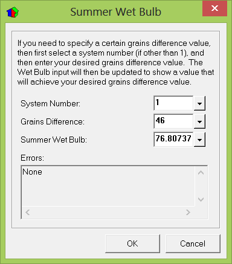

General Project Data - Design Conditions Tab |
  
|
General Project Data - Design Conditions Tab |
|
Icon:  . Keyboard Shortcut: ALT, P, G
. Keyboard Shortcut: ALT, P, G
Opens the General Project Data window, where reference data, weather conditions and duct information can be entered.
Click another tab on the picture below to go to help on that tab.
Reference City: Determines the city in the weather database from which to get data to fill in the inputs on this window. Simply type a few characters of the city you want to use for your design conditions and press Enter. If the city is found in the list its name will be completed and the inputs on this tab will be filled in. The Source column in the dropdown help for this input indicates whether the temperatures and other data came from Manual J or some other source. If the source says, "ACCA MJ8" then that means it is from Table 1A in ACCA Manual J, Eighth Edition, Version 2. If blank, that means it came from some other source. If it says, "Custom" then that means it is either one you created using the "Add City" function or one you imported a previous database version using the "Import Cities from Previous Database" feature.
Daily range: The daily temperature range is the difference between the daily high and daily low temperatures for a given location. Locations with little humidity normally have a high daily range while locations on the coast normally have a low daily range. This temperature range will affect the load on the system during the day. You should enter either L, M, or H, corresponding to one of the daily range categories below:
Low |
Less than 15 degrees difference |
|
Medium |
15 to 25 degrees difference |
|
High |
More than 25 degrees difference |
Latitude: The degrees north latitude is used to compute the load due to shaded glass and should be entered as nearly as possible. If you are using degrees south latitude, please refer to the 'Latitude' section in Chapter 7 of the User's Manual.
Elevation: The elevation is used by Rhvac in performing various psychrometric calculations such as that of indoor to outdoor moisture difference.
Elev. derating, Sensible, Total, Heating (Elevation Adjustment Factors): Typically, HVAC equipment manufacturers will give sensible cooling, total cooling and gas heating derating factors for a unit at various altitudes. If this project is located at a high altitude (2,000 feet or more), you may enter a derating factor into these inputs and Rhvac will calculate a Recommended tonnage from these inputs and from the Percent Sensible Capacity input on the HVAC Equipment Data window. For installations below 2,000 feet, these inputs can be left at the default value of 1. Some example derating factors are shown below.
Dry bulb temperature, Winter: This value represents the coldest temperature that you expect the HVAC system to handle. The winter design temperature is used to determine the worst case heating load.
Dry bulb temperature, Summer: This value represents the hottest temperature that you expect the HVAC system to handle. The Summer design temperature is used to determine the worst case cooling load.
Wet bulb temperature, Winter: This input is only important if you are going to be doing humidification in the winter and need to know the winter humidification load. Otherwise you can ignore this input.
This value is the wet bulb temperature coinciding with the winter design dry bulb temperature entered above. By default this value is set to the wet bulb temperature that corresponds to the winter outdoor dry bulb and the Manual J recommended winter outdoor relative humidity of 80%.
To reset this value to the wet bulb temperature that corresponds to your current winter outdoor dry bulb and Manual J's recommended 80% relative humidity, click the item in the list at the bottom of this input's dropdown help window.
Wet bulb temperature, Summer: This value represents the saturation temperature in degrees Fahrenheit which corresponds to the Summer outdoor dry bulb temperature. If you would like to enter a wet bulb temperature that corresponds to a certain grains difference, then click the dropdown help button for this input to open the Summer Wet Bulb dialog, shown below.

People loads: This value accounts for sensible (dry bulb) and latent (wet bulb) heat contributed by people to the rooms. The heat per person is multiplied by the number of people in each room to determine the sensible and latent load due to people.
Building Volume Option: The building volume is used in the infiltration calculations. Select how you would like the building volume to be determined.
Option |
Description |
|
Abv.Grade |
(Default) Use Manual J recommended above grade volume. |
|
Total |
Use total (above and below grade) volume. |
|
Custom |
Let me enter my own building volume. |
Building Volume Value: If you selected Custom for the building volume option enter your custom value for volume here. The value you enter will be used in certain calculations regarding infiltration.